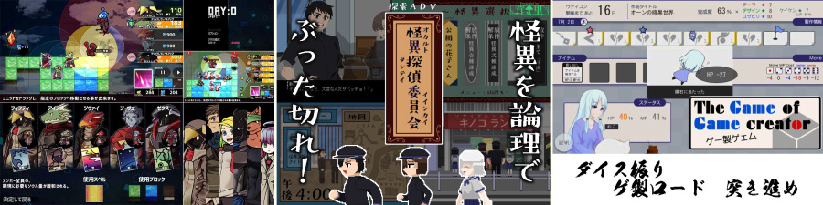
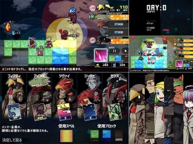
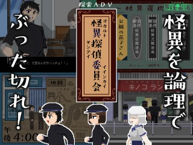
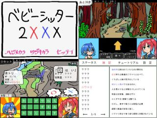

■2020-08-30 (日) 第12回ウディコン、結果発表！ 上位4作+ピックアップ紹介▼
ということで毎年の夏のお楽しみ、「WOLF RPGエディターコンテスト」も
8/29をもってとうとう結果発表＆閉幕となりました！
【WOLF RPGエディターコンテスト 公式サイト】

今年の第12回は作品の数・品質、共に例年以上にすごい回となりました！
今回もいつも通り、上位4作品と、追加で気になった作品をご紹介します！
【第１位 『DAY:0』】 PANO 様

総合1位は、ユニットを自由に移動できる
タワーディフェンス風RTS（リアルタイムシミュレーション）、『DAY:0』！
類似ゲームが思いつかないので紹介用のジャンル名に悩む斬新さです。
基本的には時間経過で敵が出現してくる中、
射程範囲内の敵を自動で攻撃してくれる味方ユニットたちをうまく移動させ、
配置を工夫して、敵への火力や受けるダメージをコントールしながら
コアを守りつづけて進行していくというゲームです。
ステージの流れは固定で、ボス戦も用意されていますが、
ドロップするアイテムだけはランダムでローグライクっぽさがあり、
出たアイテムに応じて最善手が変わってくるのが特徴です。
最初はリアルタイムで進む戦闘に
「うわー今どうなってるんだーどうすればいいんだー！？」
とアタフタしてしまうのですが（※ポーズ機能は用意されています）、
慣れてくると、味方の配置やランダムに出てくる装備の付け方を最適化して、
何倍もの戦闘力を発揮させられるのが面白いところです。
特に編成を考え始めると試行錯誤が止まらないのが魅力！
最大10体（今は12体）から5体選べるどのユニットには、どれ一人として
役に立たないキャラというのが一切おらず、
組み合わせの有利不利が色々考えられており、
絶妙なバランス調整が行われているように感じました。
高難易度では色んな試行錯誤が効果を発揮してくるので、
「何か新しくて骨のあるゲームはないかなー」とお感じの、
ゲーマー寄りな人に特におすすめの一作です！
最初はアタフタしてしまってこの作品の奥深さが見えにくかったためか、
実は投票開始くらいのこの作品の暫定順位はそんなに高くなかったのですが、
時間が経って遊び込んでハマった人たちが増えてきたのか、
後半になるにつれて徐々に得点を伸ばしてきた一作でした。
【第２位 『怪異探偵委員会』】 茸沢しめじ 様

総合2位は、怪異を論理でぶった切る探索アドベンチャーゲーム『怪異探偵委員会』！
アンティークっぽさのあるインターフェースに、一貫性のある魅力的なキャラクターたち！
物語性で2位を獲得したのも納得の、気持ちよく遊べる一作です。
基本的には横スクロールの探索ADVとして進み、
色んなところを巡って情報収集し、オカルトを解き明かしていくのを見るゲームです。
目的ははっきり明示されており、やることも分かりやすいため、
スッキリ物語に集中できます。
推理は基本的にキャラクターたちが行ってくれるので、
配信者の方は実況プレイをしながら自分の推理を話しつつ、
答え合わせのつもりで話を進めると面白いかもしれませんね。
画像もおそらく全て自作で、全体的にすみずみまでこだわりたっぷりの一本！
特にマップ表現などは全体的にものすごいこだわりを感じました。
どこを見てもすごく『それっぽい』のがすごすぎる！
楽しそうなキャラクターたちの前向きになれる物語を楽しみたい人には、
ぜひおすすめしたい一作です。遊んでいるとラムネが飲みたくなります。
【第3位 『ゲー製ゲーム』】 南天 様

総合3位は、ウディコンに向けてゲーム制作するリソース管理ゲーム、
『ゲーム製ゲーム』！
ウディコンにウディコンに出すゲームを作るゲームを投稿する
（もう何を言ってるのか分からない）
というアイデアがすでに面白いのですが、内容も非常にしっかり作られています。
内容としては、ランダムな目が出るサイコロを2つまで保持できる中、
どっちのサイコロを使って進むか、いつアイテムを使うか、
どこでアイテムを補給するか、
を考えながら、HPやMPを維持しつつ、
少しでもうまいことコマを前に進めていくゲームです。
テーマやデザイン、ユーザビリティなどの発想を示す★を集めることも
最終得点に影響します。
ゲーム開発を表現するのに『すごろく』というベースを
採用しているのが凄いなと思ったところで、
日々色んな事件やバグが発生しながらも、今できる最善の解を重ねて
少しでも完成に近づけていく様子は非常に「ゲーム開発っぽさ」を
再現できていると感じます。
ちなみに、私がこのゲーム内で作った『地獄魔弾ドギンファス』は107点で11位でした。
「得点がすごく本物のウディコンっぽい数字だ……！」と感じました。
（参考までに、今年の第12回ウディコンの11位は総ポイント113.4点）
最新版では『将棋するエルフ』とか『弟が泣く頃に』とか『ハートフル謎の物体』など
微笑ましいゲームタイトルが出るようになってましたが、コメントによると超低確率で
『片道勇者』を作れるかもしれないらしいですよ。
元ネタに入れてくださってありがとうございます！
本作はゲームを作る人、特にウディコンをご存じの人におすすめな一作で、
遊んでみると「あるあるー！」と感じてしまうイベントの数々に
いっぱい共感できると思います。
（でもうちの近所じゃヤギとUFOはあんまり見ないです）
非常に遊びやすいので、色んな人におすすめできる一作です！
【第4位 『扉は君の鍵で開く』】 暗闇行灯 様

今回は総合4位まで総合得点がほぼ変わらない超高水準のバトルだったので、
ぜひこれも追加でご紹介させていただきたいと思います！
その4位は、推理アドベンチャーゲーム、『扉は君の鍵で開く』！
「推理ゲームとしてこれだけ硬派なのを見たのは久しぶりだ！」
と感じられる推理ゲーム作品です！
このゲームはNPCに対して「キーワードを選択」あるいは「自由入力で質問」し、
ストーリーを進めていくアドベンチャーゲームです。
それだけだと「へーそうなんだー」と思われるだけかもしれませんが、
ゲームを進めていくにつれて大量のワードが出てくるため、
その中で適切に質問して情報収集するのは
的確な予想ができていないとなかなかできません。
コメントによるとこういった対話型のゲームは今でもたまにあるそうですが、
個人的には数十年前のADV黎明期を思い出すストイックさを思い出させます。
（私も歴史資料でしか知らない時代なんですが）
使ったワードに反応が返ってきたり、当たりの資料を見つけたときに
「やった！」と思えるのはこういうゲームならではの楽しみです。
当然、推理や情報整理の素養が求められる場面も出てくるので、
「世の推理ADVなんてレールのついた記憶クイズじゃないか、
もっと歯ごたえが欲しいぞ！」
なんて普段お感じの、ガッツリとした推理に挑戦してみたい人には
宝物になるかもしれない、おすすめの一作です。
【個人的にプッシュしたいゲーム】
そして最後に、私が個人的にプッシュしたい作品をご紹介！
【『ベビーシッター2XXX』（総合11位）】 二六千里 様

「こんなローグライクありか！ うわースゲー！ アリだ！ この発想はなかった！」
と感じた、『3文字で戦うノンフィールドRPG』がこの『ベビーシッター2XXX』です。
まず、文字をリソースとしてあつかうことでローグライク的に
ゲームを展開させるという発想に脱帽しました。
というのも、このゲームは保持できる「18個」の文字の中から
3つの文字を使って単語を作ることで攻撃や防御、回復などを行うのですが、
使った文字のうちの「どの文字を残すか」「手持ちをどう構成するか」の判断が
非常にアツい一作に仕上がっているのです！
そもそも手持ちの文字でどんな単語が作れるのか思いつくのが大変！
すごく頭を使います。
慣れてきてもかなり高めの難易度に感じられますが、
能力を上げて戦闘をラクにする要素があったり、
それでもダメなときは戦闘中の「リセット」で攻略の推奨ステータスにして
ステージ最初に戻れたりもするので、「詰んだ！」と思ったときも安心！
そういった配慮も各種用意されているので、言葉作りに自信があるひとや
変わったローグライクが好きな人におすすめしたい一作です。
作った単語ごとにそれらしい反応を示す、2人の表情もすごく好きですね！ う●こ！
といいますか、単語全部に表情とかデータを設定されているのがヤバい！
ここで挙げたのは上位作品と私の好みの作品ですが、
この他にも方向性の異なる面白い作品が総合順位の上位に
ピックアップされていますので、
部門別の評価やコメントなども見ながら、
よければ面白そうなのを遊んでみてくださると幸いです！
今年は全体的に品質が高く、上位40位から漏れた作品でさえ、
「これおすすめです！」と胸を張って言えそうな作品が
きっとたくさんあったと思います。
あなたの好きなゲームが今後も作られるよう、
もし好きなゲームがあったら、ぜひ作者の方を応援してあげてください！
【WOLF RPGエディターコンテスト 公式サイト】
【今後について】
さて、ウディコンは来年2021年の『第13回』も開催予定です！
すでにスケジュールも決定済みなので、来年に向けての
残り32X日のカウントダウンを眺めながらの日常が再開されます。
祭りが終わってどこか寂しくなると同時に、
いつも気がつけば開催カウントダウンが0日になってるので
自分のゲームもしっかり開発していきたいですね。
それでは、第12回ウディコンに関わってくださった全ての関係者の皆さま、
今年も本当にありがとうございました！
よければ来年も、ぜひ見ていただけますと幸いです。
2020-08-30 (日)  カテゴリ: ウディタ
カテゴリ: ウディタ
 カテゴリ: ウディタ
カテゴリ: ウディタ